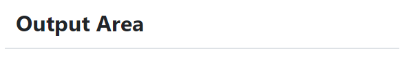

SpringBootWebSocket¶
WebSocket è un protocollo che consente a due o più computer di comunicare tra loro in modo full-duplex su una singola connessione TCP. È uno strato molto sottile su TCP che trasforma un flusso di byte in un flusso di messaggi (testo o binario).
A differenza di HTTP, che è un protocollo a livello di applicazione, nel protocollo WebSocket non ci sono abbastanza informazioni in un messaggio in arrivo affinché un framework o un container sappia come instradarlo o elaborarlo.
Per questo motivo il WebSocket RFC definisce l’uso di sottoprotocolli. Durante l’handshake, il client e il server possono utilizzare l’intestazione Sec-WebSocket-Protocol per concordare un sottoprotocollo, ovvero un protocollo a livello di applicazione superiore da utilizzare. L’uso di un sottoprotocollo non è richiesto, ma anche se non utilizzato, le applicazioni dovranno comunque scegliere un formato di messaggio che sia il client che il server possano comprendere.
Nella sua forma più semplice,
un WebSocket è solo un canale di comunicazione tra due applicazioni
e non deve essere necessariamente coinvolto un browser.
Tuttavia l’uso più comune di WebSocket è facilitare la comunicazione tra un un’applicazione server e un’applicazione basata su browser. Infatti, rispetto a HTTP RESTful, ha il vantaggio di realizzare comunicazioni asincrone bidirezionali e in tempo reale. Ciò consente al server di inviare informazione al client in qualsiasi momento, anziché costringere il client al polling.
I WebSocket utilizzano le Socket nella loro implementazione basata su un protocollo standard che definisce un handshake di connessione e un frame di messaggio.
Come primo semplice esempio di uso di WebSocket in Spring, creiamo una applicazione che consente a un client di utilizzare un browser per inviare un messaggio o una immagine a un server che provvede a visualizzare il messaggio o l’immagine presso tutti i client collegati.
Usare le WebSocket in SpringBoot¶
Con riferimento al progetto Progetto springIntro23 inseriamo nel file build.gradle la seguente dipendenza:
repositories {
mavenCentral()
flatDir { dirs '../unibolibs' }
}
dependencies {
...
//Added for WebSocket
implementation 'org.springframework.boot:spring-boot-starter-websocket'
//JSON
implementation 'com.googlecode.json-simple:json-simple:1.1.1'
//CUSTOM unibo
implementation name: 'unibo.basicomm23-1.0'
}
Inseriamo un file
index.htmlin resources/static per poter lanciare un’applicazione che presenta un’area di ouput per la visualizzazione di messaggi e un’area di input per la loro immissione.In questo caso, l’applicazione funzionerà anche senza la introduzione di un Controller, in quanto Spring utilizza di default il file
resources/static/index.html. Per fare una prova, commentiamo l’annotazione@Controllerin HIControllerDemo, rilanciamo l’applicazione e apriamo su un browser conlocalhost:8085.
Il file index.html¶
<html> <head> <title>static/index</title> </head> <body> <h1>Welcome in static/index.html</h1> <textarea id="messageArea" name="messageArea" rows="10" cols="60"> </tex area> <div> <p>Type a message and hit send:</p> <input id="inputmessage"/><button id="sendMessage">Send</button> </div> <script src="wsminimal.js"></script> </body> </html>
In assenza di controller,
apriamo in un browser la pagina http://localhost:8085, che si presenta come segue:
{kind=link}
Se invece è presente il controller HIControllerDemo, allora apriamo in un browser la pagina
http://localhost:8085/index.html.
Lo script wsminimal.js¶
Lo script resource/static/wsminimal.js definisce funzioni che realizzano la connessione con il server
e funzioni di I/O che permettono di inviare un messaggio al server e di visualizzare la risposta.
Funzioni di connessione e ricezione messaggi¶
connect: effettua una connessione alla WebSocket e riceve i messaggi inviati dal server.
var socket = connect();
function connect(){
var host = document.location.host;
var pathname = document.location.pathname;
var addr = "ws://" +host + pathname + "socket" ;
// Assicura che sia aperta un unica connessione
if(socket!==undefined && socket.readyState!==WebSocket.CLOSED){
alert("WARNING: Connessione WebSocket già stabilita");
}
socket = new WebSocket(addr); //CONNESSIONE
socket.onopen = function (event) {
addMessageToWindow("Connected");
};
socket.onmessage = function (event) { //RICEZIONE
addMessageToWindow(""+`${event.data}`);
};
return socket;
}//connect
Si noti la struttura già incontrata in Java.
Funzioni di input/output¶
sendMessage: invia un messaggio al server attraverso la socket
addMessageToWindow : visualizza un messaggio nella output area
const messageWindow = document.getElementById("messageArea");
const messageInput = document.getElementById("inputmessage");
const sendButton = document.getElementById("send");
sendButton.onclick = function (event) {
sendMessage(messageInput.value);
messageInput.value = "";
}
function sendMessage(message) {
var jsonMsg = JSON.stringify( {'name': message});
socket.send(message);
}
function addMessageToWindow(message) {
messageWindow.innerHTML += message + "\n"
}
Configurazione con WebSocketConfigurer¶
Affinché l’applicazione Spring inoltri le richieste di un client al server,
è necessario registrare un gestore utilizzando una classe di configurazione
che implementa l’interfaccia WebSocketConfigurer.
@Configuration
@EnableWebSocket
public class WebSocketConfiguration implements WebSocketConfigurer {
public static final WebSocketHandlerDemo wshandler = new WebSocketHandlerDemo();
public static final String wspath = "socket";
@Override
public void registerWebSocketHandlers(WebSocketHandlerRegistry registry){
registry.addHandler(wshandler, wspath).setAllowedOrigins("*");
}
}
L’annotazione @EnableWebSocket (da aggiungere a una classe qualificata @Configuration)
abilita l’uso delle plain WebSocket.
In base alla configurazione, il server risponderà, con una istanza di WebSocketHandler,
a richieste inviate al seguente indirizzo:
ws://<serverIP>:8085/socket
Il gestore WebSocketHandlerDemo¶
La classe WebSocketHandlerDemo definisce un gestore custom di messaggi come specializzazione della classe astratta
org.springframework.web.socket.handler.AbstractWebSocketHandler
(o delle sue sottoclassi TextWebSocketHandler o BinaryWebSocketHandler).
public class WebSocketHandlerDemo
extends AbstractWebSocketHandler {//che implements WebSocketHandler interface
private final List<WebSocketSession> sessions=new CopyOnWriteArrayList<>();
...
}
Propagazione a tutti i client¶
Per propagare un messaggio a tutti i client connessi attraverso la WebSocket, basta tenere traccia delle sessioni.
@Override //AbstractWebSocketHandler
public void afterConnectionEstablished(WebSocketSession session) throws Exception{
sessions.add(session);
super.afterConnectionEstablished(session);
}
@Override //AbstractWebSocketHandler
public void afterConnectionClosed( WebSocketSession session,
CloseStatus status) throws Exception{
sessions.remove(session);
super.afterConnectionClosed(session, status);
}
Nel nostro caso, la gestione del messaggio ricevuto
consiste nel reinviare sulla WebSocket il messaggio stesso.
Questa azione del server porrà in esecuzione sul client l’operazione socket.onmessage
(si veda connect) che visualizzerà il messaggio nell’area di output.
@Override //AbstractWebSocketHandler
protected void handleTextMessage(WebSocketSession session,
TextMessage message) throws IOException{
String cmd = message.getPayload();
sendToAll("echo: "+cmd);
}
protected void sendToAll(TextMessage message) throws IOException{
Iterator<WebSocketSession> iter = sessions.iterator();
while( iter.hasNext() ){ iter.next().sendMessage(message);}
}
Un client in Java¶
Come esempio di machine-to-machine (M2M) interaction, definiamo un client che usa
ConnectionFactory per creare una connessione
di tipo WsConnection con il server,
aggiungendo se stesso come osservatre sulla connessione.
public class TestClient extends ApplAbstractObserver {
private Interaction2021 clientConn;
public TestClient(){
clientConn = ConnectionFactory.createClientSupport(
ProtocolType.ws, "localhost", "8085/socket"); //!!! NOTE 8085/socket
((WsConnection)clientConn ).addObserver(this);
}
@Override
public void update(String s) {
CommUtils.outblue("TestClient update=" + s);
}
public void doJob(){
try {
clientConn.forward("hello from Java client");
CommUtils.outblue("TestClient forward done " );
Thread.sleep(2000); //To sse the update
} catch (Exception ex) {
CommUtils.outred("TestClient ERROR: " + ex.getMessage());
}
}
public static void main(String[] args) {
TestClient appl = new TestClient();
appl.doJob();
}
}
Esecuzione della applicazione¶
Attivare l’applicazione Spring
SpringIntro23ApplicationSENZA ControllerAprire un browser su
localhost:8085Attivare
TestCliente osservare l’update sulla output area della pagina
Introduzione di un Controller¶
L’introduzione di un Controller può essere utile per offire più funzionalità, come ad esempio un servizio senza/con la possibilità di trasferire immagini.
HIControllerDemo potenziato¶
Riprendiamo dunqune HIControllerDemo e inseriamo nuovi mapping.
import org.springframework.ui.Model
@Controller
public class HIControllerDemo {
@Value("${spring.application.name}")
String appName;
@GetMapping("/")
public String homePage(Model model) {
model.addAttribute("arg", appName);
return "welcome";
}
@GetMapping("/basic")
public String textOnly(Model model) {
model.addAttribute("arg", appName);
return "GuiNoImages";
}
GuiNoImages.html¶
In reaource/templates inseriamo un file simile a index.html, che include anche campi i cui valori possono essere fissati da Controller (grazie a thymeleaf) mediante
<html xmlns:th="http://www.thymeleaf.org">
<head>
<title>GuiNoImages</title>
</head>
<body>
<h1>GuiNoImages</h1>
<p>Welcome to <b><span th:text="${arg}">Our Arg</span></b>.</p>
<textarea id="messageArea" name="messageArea" rows="10" cols="60">
</textarea>
<div>
<p>Type a message and hit send:</p>
<input id="inputmessage"/><button id="sendMessage">Send</button>
</div>
<script src="wsminimal.js"></script>
</body>
</html>
package it.unibo.wsdemoNoSTOMP;
import org.springframework.stereotype.Controller;
import org.springframework.web.bind.annotation.RequestMapping;
@Controller
public class WebSocketController {
@RequestMapping("/")
public String textOnly() {
return "indexNoImages";
}
@RequestMapping("/alsoimages")
public String alsoImages() {
return "indexAlsoImages";
}
}
Il file indexNoImages.html è simile a al precedente index, mentre il file
indexAlsoImages.html include anche una sezione per il trasferimento immagini.
Il Controller si apsetta di trovare questi files nella directory
src/main/resources/templates e userà thymeleaf per il loro rendering.
indexAlsoImages.html¶
Il file indexAlsoImages.html definisce una pagina HTML che permette, oltre all’invio e ricezione di
testi, il trasferimento di immagini.
Questo file:
fa uso di Bootstrap, una libreria utile per realizzare pagine web reattive e mobile-first, con HTML, CSS e JavaScript; la libreria usa il preprocessore CSS scritto in Ruby denominato
Sass(Syntactically Awesome Style Sheets)utilizza il codice JavaScript definito nel file indexAlsoImages
presenta all’utente: - pulsanti per la connessione/disconnessione alla WebSocket (con
URL=ws://<ServerIP>:8085/socket) - pulsanti per l’invio di testi e di immagini - un’area di output per la visualizzazione di informazioni inviate dal server
{kind=link}
Bootstrap e webJars¶
L’uso di Bootstrap avviene attraverso i WebJars, introducendo in build.gradle le seguenti nuove dipendenze:
implementation 'org.webjars:webjars-locator-core'
implementation 'org.webjars:bootstrap:5.1.3'
implementation 'org.webjars:jquery:3.6.0'
I WebJar (chee non sono legati a Spring) sono dipendenze lato client impacchettate in file JAR. Per approfondire, si veda: WebJarsDocs e WebJarsExamples.
Struttura generale del file indexAlsoImages.html¶
<html>
<head>
<link href="/webjars/bootstrap/css/bootstrap.min.css" rel="stylesheet">
<script src="/webjars/jquery/jquery.min.js"></script>
<title>wsdemoNoStomp-images</title>
</head>
<body>
<div id="main-content" class="container-fluid pt-3">
<h1>wsdemoNoStomp</h1>
<!-- Connessione/Disconnessione alla WebSocket -->
<!-- Inserzione di testi e immagini -->
<!-- Area di output -->
</div>
</body>
Notiamo la necessità dell’uso di un WebJarsContainer come elemento-base del layout Bootstrap.
Connessione/Disconnessione alla WebSocket¶
La parte relativa alla connessione/disconnessione:
{kind=link}
viene prodotta come segue:
<div class="row">
<div class="col-md-6">
<form class="form-inline">
<div class="form-group">
<label for="connect">WebSocket connection:</label>
<button id="connect" class="btn btn-default"
type="submit">Connect</button>
<button id="disconnect" class="btn btn-default"
type="submit" disabled="disabled">Disconnect
</button>
</div>
</form>
</div>
</div>
Inserzione di testi e immagini¶
La parte relativa ai pulsanti di invio:
{kind=link}
viene prodotta come segue:
<div class="row">
<div class="col-md-6">
<form class="form-inline">
<div class="form-group">
<label for="inputmsg">Input (text)</label>
<input type="text" id="inputmsg"
class="form-control" placeholder="Input here...">
</div>
<button id="sendmsg"
class="btn btn-default" type="submit">Send text</button>
</form>
</div>
</div>
<div class="row">
<div class="col-md-6">
<form class="form-inline">
<div class="form-group">
<label for="myfile">Input (image)</label>
<input type="file" id="myfile" name="myfile"
class="form-control" accept="image/*"/>
</div>
<button id="sendImage"
class="btn btn-default" type="submit">Send Image</button>
</form>
</div>
</div>
Area di output¶
La parte relativa all’area di output:
{kind=link}
viene prodotta come segue:
<div class="row">
<div class="col-md-12">
<table id="conversation" class="table table-striped">
<thead>
<tr>
<th>Output Area</th>
</tr>
</thead>
<tbody id="output">
</tbody>
</table>
</div>
</div>
Lo script wsalsoimages.js¶
Lo script wsalsoimages.js utilizza JQuery e definisce funzioni:
per la connessione/disconnessione mediante WebSocket
per permettere all’utente di inserire messaggi e immagini da inviare al server mediante WebSocket
per visualizzare informazioni ricevute dal server
const fileInput = document.getElementById("myfile");
$(function () {
$("form").on('submit', function (e) { e.preventDefault(); });
$( "#connect" ).click(function() { connect(); });
$( "#disconnect" ).click(function() { disconnect(); });
$( "#sendmsg" ).click(function() {
sendMessage($("#inputmsg").val());});
$( "#sendImage" ).click(function() {
let f = fileInput.files[0]; sendMessage(f); });
});
function addImageToWindow(image) {
let url = URL.createObjectURL(new Blob([image]));
$("#output").append("<tr><td>" +
`<img src="${url}"/>` + "</td></tr>");
}
Al caricamento della pagina si vuole sia attivo il solo pulsante Connect, che va disattivato (a favore di Disconnect) una volta premuto.
function disconnect() {
setConnected(false);
}
function setConnected(connected) {
$("#connect").prop("disabled", connected);
$("#disconnect").prop("disabled", !connected);
if (connected) { $("#conversation").show(); }
else { $("#conversation").hide(); }
$("#output").html("");
}
function connect(){
var host = document.location.host;
var pathname = "/"; //document.location.pathname;
var addr = "ws://" + host + pathname + "socket" ;
// Assicura che sia aperta un unica connessione
if(socket !== undefined && socket.readyState !== WebSocket.CLOSED){
console.log("Connessione WebSocket già stabilita");
}
Le creazione della WebSocket è accompagnata dalla definizione di callback relativi alla apertura della socket e alla ricezione di messaggi dal server.
socket = new WebSocket(addr);
socket.binaryType = "arraybuffer";
socket.onopen = function (event) {
setConnected(true);
addMessageToWindow("Connected");
};
/*
RICEZIONE di messaggi dal server
*/
socket.onmessage = function (event) {
if (event.data instanceof ArrayBuffer) {
addMessageToWindow('Got Image:');
addImageToWindow(event.data);
} else {
addMessageToWindow(`Got Message: ${event.data}`);
}
};
}//connect
L’informazione inviata sulla socket viene segnalata anche nell’outputArea.
function sendMessage(message) {
console.log("sendMessage " + message );
socket.send(message);
addMessageToWindow("Sent Message: " + message);
}